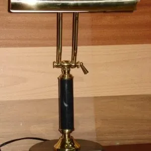

Аксессуары для фортепиано
Лампы, метрономы, подсвечники и принадлежности для музыкантов и настройщиков можно подобрать в магазине на 5-й Парковой.
Связаться с салоном
Для игры и ухода
Подставки для ног, ролики и опоры под них, регуляторы влажности, гигрометры, полироль, клей и графит. Есть инструменты для регулировки, настроечные ключи, сукно и сувениры.
Визит в Измайлово
Магазин находится по адресу Москва, ул. 5-я Парковая, д. 10. Перед поездкой уточните наличие и цены по телефону +7 (495) 465-03-00.